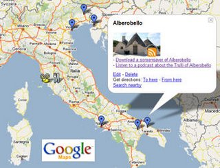

Google has just added a new interesting feature to their online mapping service called MyMaps. MyMaps allows anybody to create personalized maps with annotations including text, images, links, and share it with others. We jumped on the opportunity to visually link the content of our blog, podcasts and videos to a customized Google MyMap of Italy. Please let us know what you think. - View ItalyFromTheInside's Google MyMap In January, we also did a video review of Google Maps and Microsoft Local Live Search.